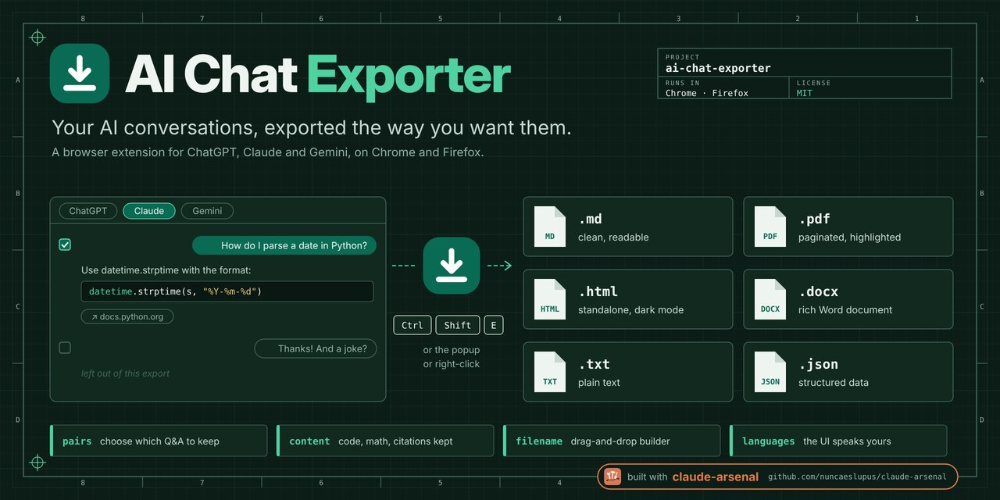

Export ChatGPT, Claude and Gemini chats to PDF, Markdown or Word
A free browser extension for Chrome, Edge and Firefox. It reads the conversation you have open and saves it as PDF, Markdown, HTML, Word (.docx), plain text or JSON, or prints it, keeping code blocks, tables, math, citations and artifacts that copy-paste loses. Everything runs in your browser; your chats are never uploaded.

Six formats
- PDF: paginated, with syntax-highlighted code and page numbers.
- Markdown: for notes apps, docs and feeding to other AI tools.
- HTML: a standalone page, with a dark mode.
- Word (.docx): to keep editing in Word or Google Docs.
- Plain text: the conversation and nothing else.
- JSON: platform, model, URL, timestamps and the ordered question/answer pairs, for scripts and agents.
What it keeps
Code blocks, tables, lists, headings, blockquotes, images, math (as its LaTeX source), web search citations, ChatGPT canvas and Deep Research reports, and Claude artifacts. Each export starts with the title, platform, model, date and URL.
How to use it
- Open a conversation on chatgpt.com, claude.ai or gemini.google.com.
- Click the extension icon, choose a format, then Export or Print.
- Or right-click the page and use the Export and Print menus, or press Ctrl+Shift+E (Cmd+Shift+E on Mac) to export in the format you last used.
You can pick which question-and-answer pairs to include, set the text size, build the file name, and switch the language: English, Spanish, French, German, Italian, Portuguese or Catalan.
Private by design
No account, no backend, no analytics. The only network requests go to the chat site you are already on: Claude's own API for artifact contents, and the conversation's images when a PDF embeds them. Read the privacy policy.
Questions
How do I export a ChatGPT conversation to PDF?
Open the conversation, click the extension icon, choose PDF and click Export. The same works for Markdown, Word and the other formats.
Can I export Claude and Gemini chats too?
Yes: claude.ai (with artifact contents), gemini.google.com and chatgpt.com.
Can I export only part of a conversation?
Yes. Select the question-and-answer pairs you want before exporting.
Does it export all my chats at once?
No. It exports the conversation you have open, one at a time.
Is it free?
Yes. Free and open source under the MIT license, with no limits.
More tools by the same author
- Image to SVG: convert PNG, JPG or WebP to SVG in the browser.
- Nacho Viewer: a desktop viewer for Markdown files.
- research-buddy and claude-arsenal: tools for working with AI agents.